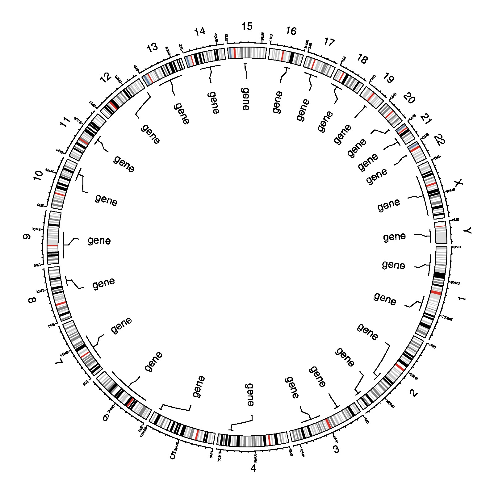

library(circlize)
par(mar = c(1, 1, 1, 1))
circos.initializeWithIdeogram()
bed = generateRandomBed(nr = 20, nc = 0)
circos.genomicPosTransformLines(bed, posTransform = posTransform.default, horizontalLine = "top", track.height = 0.1)
circos.genomicTrackPlotRegion(bed, ylim = c(0, 1), panel.fun = function(region, value, ...) {
circos.genomicText(region, value, y = 1, adj = c(0, 0.5), labels = "gene", facing = "reverse.clockwise", niceFacing = TRUE,
posTransform = posTransform.default)
}, bg.border = NA)
circos.clear()